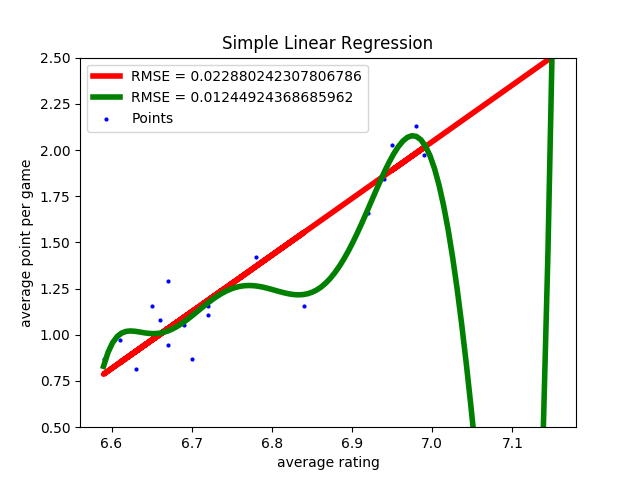
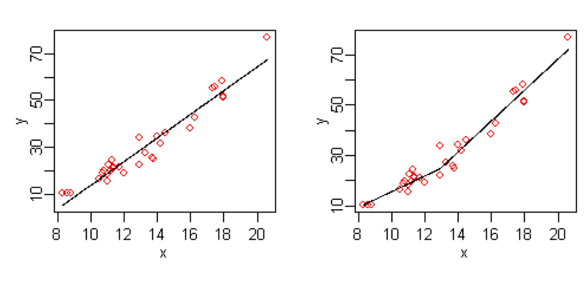
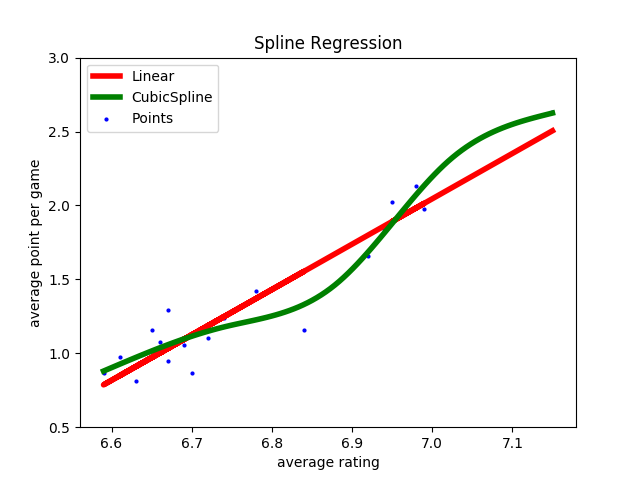
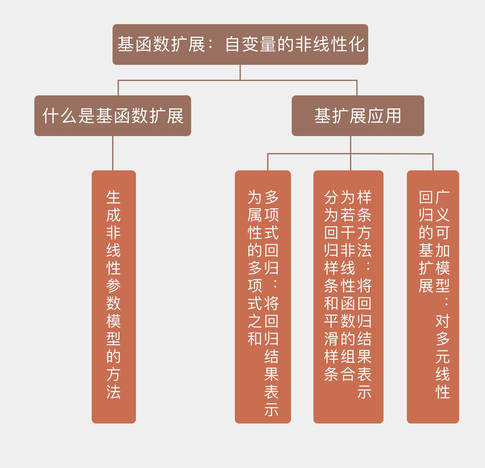

- 00 开篇词 打通修炼机器学习的任督二脉.md
- 01 频率视角下的机器学习.md
- 02 贝叶斯视角下的机器学习.md
- 03 学什么与怎么学.md
- 04 计算学习理论.md
- 05 模型的分类方式.md
- 06 模型的设计准则.md
- 07 模型的验证方法.md
- 08 模型的评估指标.md
- 09 实验设计.md
- 10 特征预处理.md
- 11 基础线性回归：一元与多元.md
- 12 正则化处理：收缩方法与边际化.md
- 13 线性降维：主成分的使用.md
- 14 非线性降维：流形学习.md
- 15 从回归到分类：联系函数与降维.md
- 16 建模非正态分布：广义线性模型.md
- 17 几何角度看分类：支持向量机.md
- 18 从全局到局部：核技巧.md
- 19 非参数化的局部模型：K近邻.md
- 20 基于距离的学习：聚类与度量学习.md
- 21 基函数扩展：属性的非线性化.md
- 22 自适应的基函数：神经网络.md
- 23 层次化的神经网络：深度学习.md
- 24 深度编解码：表示学习.md
- 25 基于特征的区域划分：树模型.md
- 26 集成化处理：Boosting与Bagging.md
- 27 万能模型：梯度提升与随机森林.md
- 28 最简单的概率图：朴素贝叶斯.md
- 29 有向图模型：贝叶斯网络.md
- 30 无向图模型：马尔可夫随机场.md
- 31 建模连续分布：高斯网络.md
- 32 从有限到无限：高斯过程.md
- 33 序列化建模：隐马尔可夫模型.md
- 34 连续序列化模型：线性动态系统.md
- 35 精确推断：变量消除及其拓展.md
- 36 确定近似推断：变分贝叶斯.md
- 37 随机近似推断：MCMC.md
- 38 完备数据下的参数学习：有向图与无向图.md
- 39 隐变量下的参数学习：EM方法与混合模型.md
- 40 结构学习：基于约束与基于评分.md
- 如何成为机器学习工程师？.md
- 总结课 机器学习的模型体系.md
- 总结课 贝叶斯学习的模型体系.md
- 结课 终有一天，你将为今天的付出骄傲.md
21 基函数扩展：属性的非线性化
虽然线性回归是机器学习中最基础的模型，但它的表达能力会天然地受到线性函数的限制，用它来模拟多项式函数或者指数函数等非线性的关系时，不可避免地会出现误差。要获得更强的表达能力，必须要把非线性的元素纳入到学习模型之中。
以核技巧为代表的局部化模型就是一种有效的非线性的尝试。但它的非线性来源于非参数的处理方式，也就是将很多个规则的局部组合成一个不规则的整体。那么有没有可能在全局层面上添加非线性元素呢？
还记得线性回归的表达式吗？在这里我把它重写一遍
\[ y =\\beta_0 + \\beta_1x_1 + \\beta_2x_2 + \\cdots + \\beta_nx_n \]
其中的\(x_i\)可以看成是和属性相关的基函数（basis function）。在最原始的线性回归中，基函数的形式是恒等函数，因此这样的模型无论对属性\(x_i\)还是对系数\(\\beta_i\)都是线性的。
但在统计学中，线性模型名称中的“线性”描述的对象是未知的回归系数\(\\beta_i\)，也就是回归结果和回归系数之间存在着线性关系。这说明回归式中的和属性相关的每一项对输出的贡献程度都是固定的，但这些贡献到底以什么样的形式来输出，是属性取值本身还是它的平方抑或开根号，线性模型并没有做出指定。
充分利用关于基函数的灵活性，就可以将线性回归的表达式推广成
\[ y =\\beta_0 + \\beta_1\\phi(x_1) + \\beta_2\\phi(x_2) + \\cdots + \\beta_n\\phi(x_n) \]
显然，当\(\\phi(\\cdot)\)是个非线性的函数时，回归结果实际上就是经过非线性变换的输入属性的线性组合，因变量和自变量之间也就建立起了非线性的关系。这种生成非线性的参数模型的方法就是基函数扩展（basis expansion）。
如果你对高等数学还有印象的话，就会发现基函数扩展并不是一个陌生的概念，只不过没有以这样的名字出现。在信号分析中，傅里叶变换（Fourier transform）是最基本最核心的工具，它可以实现时域和频域的转换，将时域信号表示成无数个频率成分的组合。这个表达的过程就是傅里叶逆变换（inverse Fourier transform）
\[ f(t) = \\dfrac{1}{2\\pi} \\int_{-\\infty}^{+\\infty} F(\\omega) e ^ {j\\omega t}{\\rm d}\\omega \]
其中的\(e ^ {j\\omega t}\)代表频率成分\(\\omega\)，这个虚指数函数作为傅里叶变换中的基函数，显然是时间\(t\)的非线性函数。而\(F(\\omega)\)表示这个频率成分的权重系数，需要通过傅里叶变换（Fourier transform）来计算
\[ F(\\omega) = \\int_{-\\infty}^{+\\infty} f(t)e ^ {-j\\omega t}{\\rm d}t \]
由于时间变量\(t\)在\(F(\\omega)\)的积分中被消除，因此每个频率成分在信号中的比例，也就是每个权重系数都不会因时间的变化而变化，只和频率本身有关，这也是傅里叶变换属于线性变换的原因。
基扩展方法最简单的应用是多项式回归。多项式回归（polynomial regression）将自变量\(x\)和因变量\(y\)之间的关系定义为\(x\)的\(n\)阶多项式，从而使\(x\)和\(y\)之间呈现出非线性的关系。在只有一个自变量的情况下，多项式回归的表达式可以写成
\[ y =\\beta_0 + \\beta_1x + \\beta_2x^2 + \\cdots + \\beta_nx^n \]
多项式回归可以看成是多元线性回归的一个特例，但它的可解释性却并不清晰。在傅里叶变换中，不同的虚指数函数\(e ^ {j\\omega t}\)之间是相互正交的，因而它们可以看成是互不相关的一组自变量，共同定义出一个特征空间。
但是当自变量\(x\)在[0, 1]上均匀分布时，\(x\)和\(x ^ 2\)之间的相关系数可以达到0.97！在如此强的相关系数之下，很难将两者对回归结果的各自贡献准确地区分开来。

英超数据集的线性回归结果和10次多项式回归结果
除了难以解释之外，多项式回归还有较高的过拟合风险。还是以前文中的英超数据集为例，线性回归假设场均积分和平均评分之间存在\(y = ax + b\)的关系。从拟合结果来看，虽然存在异常点和误差，这种关系却把握住了自变量和因变量之间的主要趋势。
如果想要继续降低误差，就可以应用更加复杂的多项式模型。显然，用10次多项式来拟合英超数据集，相当于用5倍于线性模型的参数换来均方误差近一半的下降。但训练集上的误差较小并不意味着测试集上的误差较小，根据偏差方差分解的理论，这么复杂的模型方差通常会比较大，其泛化性能将不容乐观。
既然全局概念在基扩展中的表现差强人意，局部化处理就又成了自然而然的选择。其实，多项式回归和局部化的非参数方法可以说是殊途同归，两者的目的都是模拟自变量和因变量之间的非线性关系，因此用非参数模型来实现非线性化是水到渠成的方式。多元自适应回归样条就是一种典型的非参数回归方法。
多元自适应回归样条（multivariate adaptive regression splines, MARS）是线性回归的推广，用于对自变量的非线性和不同自变量之间的相互作用进行建模。它和多项式回归的区别在于后者将非线性的来源看作全局模型的固有属性，而前者则视非线性为不同参数的线性模型的组合。
如果将一个非线性函数的定义域划分成很多足够小的区域的组合，那在每个小区域上函数都会近似地满足线性性质。将这个过程调转方向，用很多条直线组合成一条曲线，就是MARS方法的思路。

简单线性回归与多元自适应回归样条的比较（图片来自维基百科）
上面这张图可以直观地体现出MARS的原理。图中左侧是原始的线性回归，虽然它和大部分数据点有较高的符合度，但右上角的离群点却与模型有明显的偏离。而MARS做出的改进就是在回归结果中建立一个分界点，将原来的模型一分为二，不同的区域用不同的参数来描述。这相当于通过增加参数的数目引入非线性的元素，起到降低均方误差、提高拟合精度的作用。
看到这里，你可能就一拍大腿：虽然起了火星哥这么高大上的名字，但MARS背后的原理不就是分段函数嘛！没错，这种由不同的多项式函数在多个临界点上拼接而成的函数就叫回归样条（regression spline）。
在自变量的不同取值范围内，样条的系数会有所不同，系数发生变化的临界点就是分段的结点（knot）。在估计不同区间段内的系数时，MARS采用的也是最小二乘法。
一般来说，拼接起来的样条在结点上需要满足连续性的条件：最简单的是函数本身的连续性，也就是临界点的左极限与右极限相等，都等于函数值。如果在此基础上进一步满足一阶导数连续和二阶导数连续，这样的样条就是三次样条（cubic spline）。
三次样条由不同的三阶多项式拼接而成，它在结点处的不连续性已经不能被人眼所察觉。让三次样条进一步在边界区域满足附加的线性约束条件的话，得到的就是自然三次样条（natural cubic spline）。
和预先确定分段结点、再产生基函数并拼接的回归样条相比，另一类名为平滑样条的方法可以动态地确定结点的位置和数目。平滑样条（smoothing spline）要在拟合数据的同时尽可能保证拟合结果具有平滑的特性，这也是它名称的来源。平滑样条的任务是计算出让下面的误差函数最小化的拟合结果\(g(\\cdot)\)
\[ E = \\sum\\limits_{i = 1}^N \[y_i - g(x_i)\] ^ 2 + \\lambda\\int g’’(t) ^ 2 {\\rm d}t \]
可以看出，平滑样条的最小化对象具有“误差函数 + 正则化项”的形式，这与岭回归和LASSO的思想不谋而合。
上面式子中的\(\\lambda \\ge 0\)是平滑系数（smoothing parameter），体现了算法对函数\(g(\\cdot)\)的波动性的控制。二阶导数反映的是函数在某个点上变化的剧烈程度：直线\(y = ax + b\)的二阶导数为0，说明其图形在整个定义域上都有平滑的形状；而自由落体的表达式\(y = gt ^ 2 / 2\)的二阶导数约等于5，说明其图形在每个点上都有剧烈的变化。
平滑系数的作用就是通过控制模型的平滑度来实现偏差和方差的折中。\(\\lambda = 0\)意味着算法对模型的平滑度不做控制，将每个数据点都作为自然三次样条的结点，得到的拟合结果就会发生剧烈的抖动；\(\\lambda = +\\infty\)则意味着对抖动做出最大程度的抑制，其结果就是将平滑样条退化为普通线性回归。在实际应用中，平滑系数这个超参数的取值一般要通过交叉验证来确定。
前面讨论的几种非线性的处理方式针对的都是单变量的情形，可以看成是对简单线性回归的推广。如果将推广的对象扩展到多元线性回归，得到的就是广义可加模型。
广义可加模型（generalized additive model）将标准线性回归中的每个自变量以及可能存在的自变量之间的交互项都替换成一个非线性的平滑函数，各个非线性函数之间则保持相加的关系，其数学表达式可以写成
\[ y_i = \\beta_0 + f_1(x_{i1}) + f_2(x_{i2}) + \\cdots + f_p(x_{ip}) \]
广义可加模型可以和之前介绍过的广义线性模型相融合，通过链接函数将可加模型的结果转换为线性模型的输出，这使得广义可加模型也可以用于分类算法中。
要使用Python语言实现回归样条模型，可以利用patsy库。patsy库脱胎于统计中的R语言，可以看成是R语言的部分功能在Python中的实现。它使用简短的字符串“公式语法”描述统计模型，因而适合和statsmodels配套使用。想要了解关于patsy工作方式的更多信息，你可以查阅其官方文档。
利用patsy实现回归样条时，主要应用它的cr函数来生成自然三次样条作为基函数。将回归样条应用到线性回归的英超数据集中，当结点的数目为设定为场均评分的3个四等分点时，样条回归的结果如下图所示。
可以看出，回归结果是一条平滑的曲线，但计算均方误差的话你会发现，样条回归的均方误差比线性回归的均方误差还要大。其原因可能在于数据本身已经具有良好的线性特性，因此强行使用非线性模型进行拟合不会带来良好的效果。

三次样条回归与普通线性回归的结果比较
今天我和你分享了通过基函数扩展实现非线性模型的方法，包含以下四个要点：
基扩展将线性回归中的自变量替换为非线性的函数，使模型能够描述非线性关系；
多项式回归将回归结果表示为属性的多项式之和；
样条方法将回归结果表示为若干非线性函数的组合，可以分为回归样条和平滑样条；
广义可加模型是对多元线性回归的基扩展。
基函数的扩展主要出现在统计学的文献中，被看成是曲线拟合的有力工具，在机器学习中反而并不多见。那么你认为在以预测建模为主要目标的机器学习中，它能够发挥什么样的作用呢？
欢迎分享你的观点。

© 2019 - 2023 Liangliang Lee. Powered by gin and hexo-theme-book.